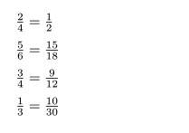
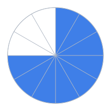
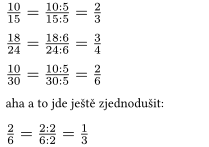
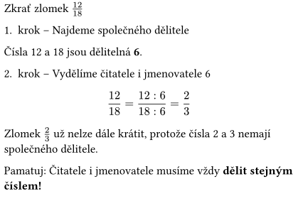
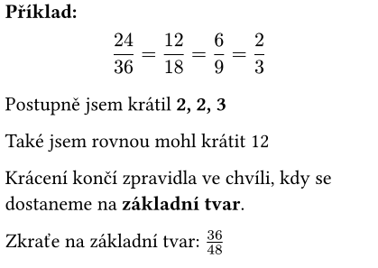

Někdy stejnou část celku můžeme vyjádřit různým zlomkem. Přestože jsou různé, označují stejnou část (například kdybychom vybarvili kruh, bude vybarvena stejná část).


A když chci tedy složitý zápis zjednodušit?
Zkrátit zlomek znamená čitatele i jmenovatele vydělit stejným číslem (různým od nuly!)

Nejlépe je najít největší společný dělitel pro čitatele a jmenovatele. Pokud se vám to nepovede hned, můžete zkusit krátit postupně menšími čísly.

Pokud již čitatele a jmenovatele nelze dále krátit (jsou to nesoudělná čísla), jsme na konci, máme tzv.
základní tvar.
Základní tvar je nejmenší možný zápis zlomku.

Není to složité, ale...